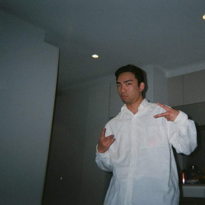

Personal Info

Name: Angus Dieu
Student number: s3659791
Email: s3659791@student.rmit.edu.au
About Me
I don't have a particularly interesting backstory if I'm being honest. I was born out of wedlock to two Vietnamese parents. I attended Northcote High School, a school that pushed a pretty aggressively progressive agenda. For example, we'd have a Pride Day like every term, it is a very hipster kinda area so it made sense.
I played a lot of sports in my school years. This included footy and cricket for clubs but I also represented my school in footy, cricket, futsal, basketball and badminton. I didn't do some of these sports out of passion, I just wanted a day off school. However, now that I'm out of school, I don't play any sports anymore except for netball which I did for one season. My fitness has suffered as a result of this.
Following my Japan trip during my year 12 holidays, I've picked up a big interest in anime, which is strange considering people usually go to Japan because they are already into anime and japanese culture. However I always liked Dragon Ball Z since it was on the morning TV back in the day.
Interesting Facts
- I scrunch my toilet paper
- I keep tomato sauce in the pantry
- I've never travelled to a non-Asian country